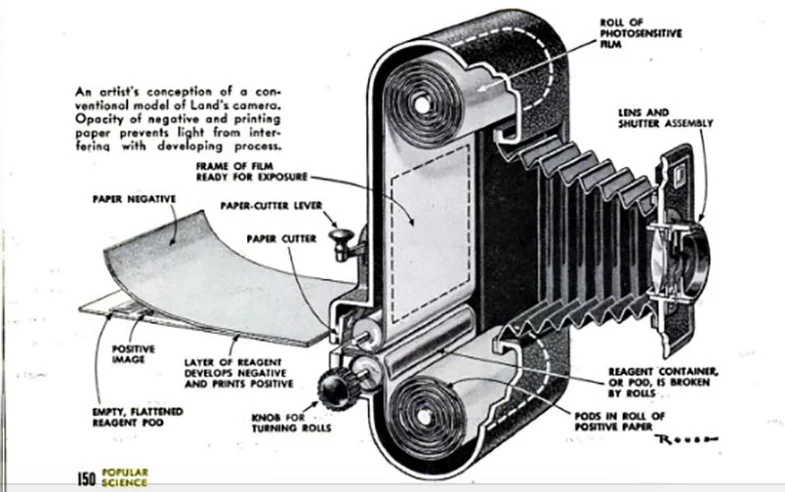

About the Polaroid Camera
Experience the magic of instant photography with the iconic Polaroid camera. Introduced in 1948 with the Model 95, it marked the beginning of a revolutionary era in capturing memories.
Key Features:
- Instant Prints: Witness your photos develop in just minutes.
- Portable Design: Capture moments on the go with a compact and stylish camera.
- Simple Operation: No need for complicated settings - just point, shoot, and enjoy.
- Nostalgic Appeal: The Polaroid format brings a timeless charm to your photographs.
The Polaroid camera became a cultural phenomenon, cherished for its ability to create tangible memories in a digital world. From family gatherings to artistic expressions, it has been a companion in countless moments.